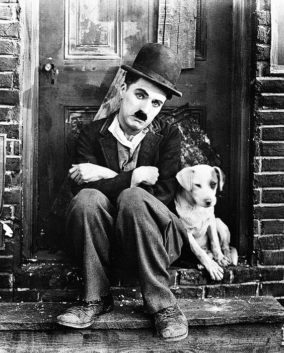
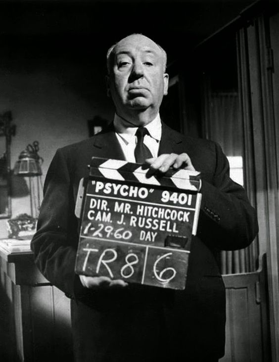

Historia del Cine
Orígenes (1890-1910): Los primeros experimentos con el cine se remontan a la década de 1890, con pioneros como los hermanos Lumière en Francia y Thomas Edison en Estados Unidos, quienes desarrollaron la tecnología para capturar y proyectar imágenes en movimiento.
Cine mudo (1910-1920): Esta época vio el desarrollo de técnicas narrativas y cinematográficas, con cineastas como D.W. Griffith que introdujeron técnicas de edición y narración visual. Películas como "El nacimiento de una nación" (1915) fueron destacadas por su innovación y controversia.
Época dorada de Hollywood (1920-1950): Hollywood se convirtió en el centro mundial de la industria cinematográfica. Se produjeron grandes películas como "Lo que el viento se llevó" (1939) y "Casablanca" (1942). Se desarrollaron géneros como el cine negro, la comedia screwball y el musical.
Cine sonoro y color (década de 1930): La introducción del sonido en el cine con películas como "El cantante de jazz" (1927) y la llegada del Technicolor permitieron una mayor inmersión y expresión artística.


Posguerra y Nuevas Olas (1950-1960): Después de la Segunda Guerra Mundial, surgieron movimientos cinematográficos innovadores en todo el mundo, como la Nouvelle Vague en Francia y el neorrealismo italiano, con películas como "Los 400 golpes" (1959) y "Ladrón de bicicletas" (1948).
Cine moderno (1960-1980): Esta época vio la llegada de nuevos estilos y movimientos, como el cine independiente, el cine de autor y el cine de terror moderno. Directores como Alfred Hitchcock, Martin Scorsese y Francis Ford Coppola dejaron su huella en la historia del cine.

Cine contemporáneo (1980-presente): La llegada de la era digital revolucionó la industria cinematográfica, permitiendo nuevas formas de producción y distribución. Se produjeron avances en efectos especiales y técnicas cinematográficas. El cine internacional también ganó prominencia, con películas extranjeras ganando reconocimiento en festivales y premiaciones.